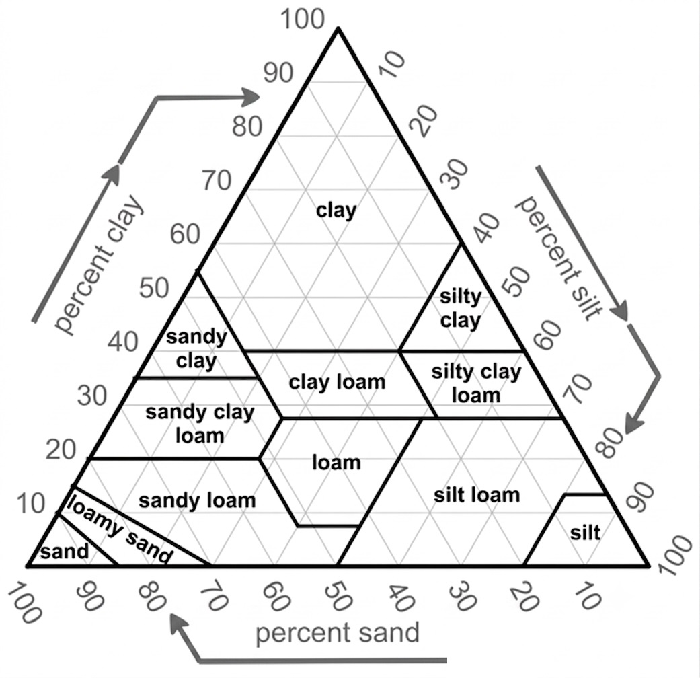
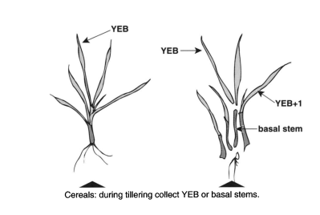
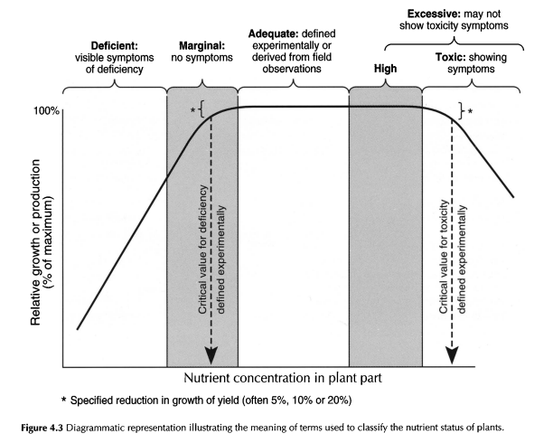
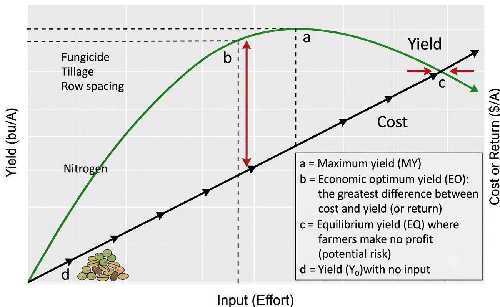
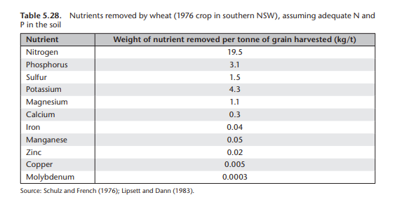
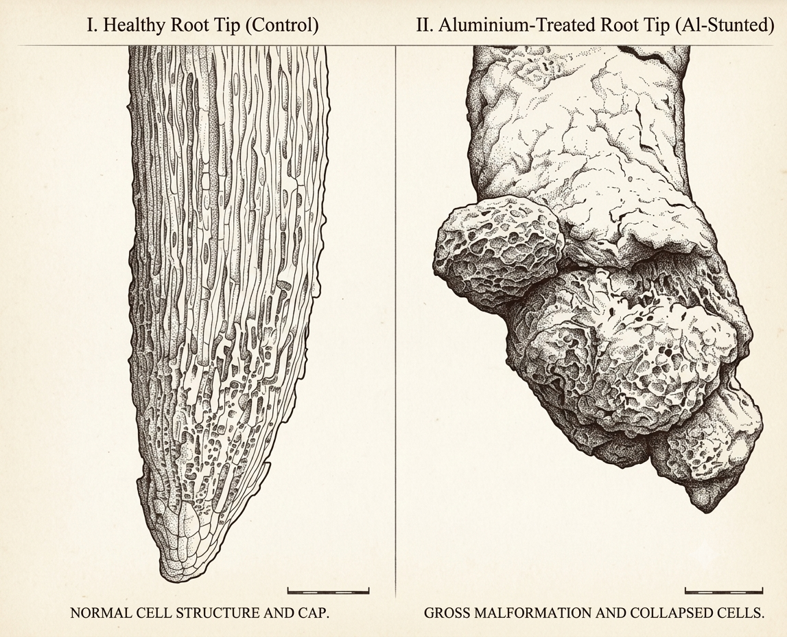

SCIE3314 · Crops and Cropping Systems
Turning invisible soil chemistry into a management decision
Lecture 03 · University of Western Australia
Presented by Gustavo Alckmin
Every recommendation in this lecture is a real decision an agronomist makes before every season, with real dollars attached.
Part 1
Why we test, how to take a sample that means something, and what each number on the page actually measures.
A soil test converts invisible chemistry into a decision:
Fig-L03-Sampling — a Z/W walk bulks 15–30 cores into one composite while steering clear of gateways, stubble heaps and old fence lines; the inset shows the same core split into 0–10 / 10–20 / 20–30 cm depth increments.

Each method uses a different chemical extractant, so each measures a different "available" pool:
Every number is read against another:

Two different numbers that are often confused:
Part 2
How a soil-test number becomes a fertiliser rate, and why agronomists don't all agree on the logic for getting there.


a = maximum yield; b = economic optimum yield (biggest gap between yield and cost); c = equilibrium yield, where cost catches yield and profit hits zero; d = yield with no input at all.

| Product | P removed in 1 t of product (kg/t) |
|---|---|
| Cereal grain (wheat, barley) | 2–4.5 |
| Canola | 7 |
Filtered from Table 5.29 (adapted from GRDC 2012a) to the crops relevant to this unit.
| Crop type | N (kg) | P (kg) | K (kg) | S (kg) | Ca (kg) | Mg (kg) | Cu (g) | Zn (g) | Mn (g) |
|---|---|---|---|---|---|---|---|---|---|
| Wheat – Aust standard hard | 21.8 | 2.26 | 3.33 | 1.40 | 0.33 | 0.93 | – | – | – |
| Wheat – Aust standard white | 17.7 | 2.41 | 3.40 | 1.35 | 0.31 | 1.02 | – | – | – |
| Wheat soft | 16.6 | 2.51 | 3.43 | 1.19 | 0.32 | 0.95 | – | – | – |
| Wheat – prime hard | 24.5 | 2.43 | 3.10 | 1.64 | 0.36 | 1.64 | 5 | 29 | 40 |
| Barley | 19.2 | 2.88 | 4.39 | 1.10 | 0.35 | 1.08 | – | – | – |
| Oats | 16.5 | 3.0 | 3.9 | 1.5 | 0.5 | 1.0 | – | – | – |
| Albus lupin | 57.3 | 3.6 | 8.8 | 2.5 | 2.0 | 1.3 | – | – | – |
| Canola | 40 | 6.2 | 9.2 | 9.8 | 4.1 | 4.0 | – | – | – |
| Cereal hay | 20.0 | 2.0 | 12.0 | 1.5 | 12.0 | 3.0 | – | – | – |
| Lucerne hay | 34.5 | 2.7 | 19.6 | 3.2 | 9.1 | 4.6 | – | – | – |
Filtered from Table 5.30 (adapted from Price 2006) to wheat, barley, oats, albus lupin, canola, cereal hay and lucerne hay. Figures are nutrients removed per tonne of product.
Lift the soil test to a target index, then replace what the crop removes:
Add nutrient only when the soil test falls below a critical threshold:
BS = (K + Ca + Mg + Na) × 100 / CEC
| Cation | Target % of CEC |
|---|---|
| Ca²⁺ | 60–70% |
| Mg²⁺ | 10–20% |
| K⁺ | 3–5% |
| Na⁺ | 1–2% |
| H⁺ (exch. acidity) | 10–15% |
| Other/trace cations | 2–4% |
Reference ranges from the Albrecht basic cation saturation ratio (BCSR) system — one specific version of the "ideal ratio" idea at left, not a WA-calibrated recommendation.
Part 3
Why acidification happens, what actually damages the crop, and how the correction is a multi-decade program, not a single fix.
flowchart LR
NFERT["N fertiliser & legume<br/>N fixation"] --> NIT["Nitrification<br/>releases H+"]
NIT --> LEACH["Nitrate leaching removes<br/>base cations"]
REMOVAL["Grain / hay removal<br/>exports alkalinity"] --> PHDROP
LEACH --> PHDROP["Soil pH falls"]
PHDROP --> ALREL["Aluminium released<br/>(below pHCa ~4.5-4.8)"]
ALREL --> ROOT["Root tips poisoned,<br/>roots stunted"]
ROOT --> YIELD["Reduced water/nutrient<br/>access, yield loss"]
YIELD -.->|"invisible from the surface"| LIME["Correction: lime, but moves slowly"]
LIME -.-> PHDROP
classDef bad fill:#FFF7D7,stroke:#E2B600,color:#333
class ALREL,ROOT,YIELD bad
The dominant driver in WA's high-input, legume-inclusive, freely-draining sandy systems is nitrate leaching — worth roughly $500M-$1.5B in lost yield income across WA each year.

Fig-L03-AlToxicity — a healthy root tip (left) versus an aluminium-stunted root tip (right): thickened, collapsed cell clusters replace the normal elongating cap, drastically reducing the root's ability to explore for water and nutrients.
CaCO₃ + 2H⁺ → Ca²⁺ + CO₂↑ + H₂O
CaSO₄·2H₂O ⇌ Ca²⁺ + SO₄²⁻ + 2H₂O
Al³⁺ + SO₄²⁻ ⇌ AlSO₄⁺
Lime is only sparingly soluble and moves down the profile at roughly centimetres per year:
A practical workflow:
Part 4
Two decisions made at seeding that rival soil chemistry in how much yield they control.
Seeding Rate (kg/ha) =
(Target Population (plants/m²) × TGW (g) × 100)
÷ (% Germination × % Emergence)
Early sowing lengthens the season and captures more light and water — but risks flowering into frost. Late sowing pushes flowering and grain fill into heat and terminal drought.
Every location has an optimal flowering window — late enough that frost risk has fallen, early enough that heat-and-drought risk hasn't yet risen. Variety phenology and sowing date are chosen together so flowering lands inside it.
Next lecture → L04 WA Climate